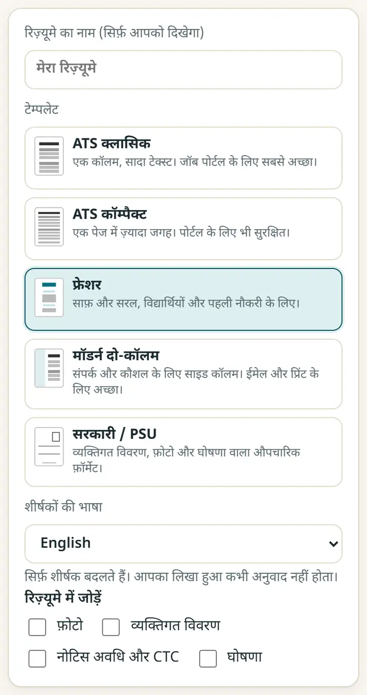
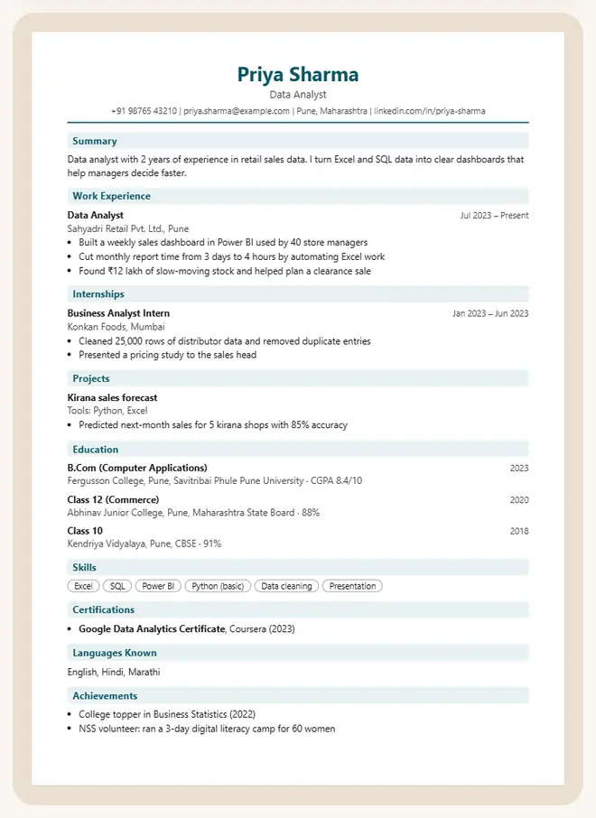

फ्रेशर के लिए रिज़्यूमे फ़ॉर्मेट: एक पेज का रिज़्यूमे मुफ़्त में बनाएँ
कई रिज़्यूमे वेबसाइट पहले सब कुछ भरवा लेती हैं और फिर डाउनलोड से पहले पैसे या लॉगिन माँगती हैं। यहाँ आप एक साफ़-सुथरा एक पेज का रिज़्यूमे बनाकर PDF मुफ़्त में सेव कर सकते हैं, और आपका फ़ोन नंबर व पता आपके अपने डिवाइस पर ही रहते हैं।
छोटा जवाब
रिज़्यूमे और CV बनाएँ खोलें, “खाली से शुरू करें” दबाएँ और “फ्रेशर” टेम्पलेट चुनें (जॉब पोर्टल के लिए “ATS क्लासिक”)। अपना नाम और संपर्क, 2 या 3 लाइन का सार, पढ़ाई, प्रोजेक्ट या इंटर्नशिप और स्किल भरें। इसे एक पेज में रखें, फिर “PDF सेव / प्रिंट” दबाएँ और Save as PDF चुनें।
5 स्टेप में फ्रेशर रिज़्यूमे
-
ऐप खोलें और ख़ाली से शुरू करें
रिज़्यूमे और CV बनाएँ खोलें। यह एक नमूना रिज़्यूमे के साथ खुलता है, ताकि आप फ़ॉर्मेट देख सकें। उसे हटाकर अपनी जानकारी भरने के लिए “खाली से शुरू करें” दबाएँ।
-
टेम्पलेट चुनें
“फ्रेशर” साफ़ और सरल है, विद्यार्थियों और पहली नौकरी के लिए। जॉब पोर्टल और कंपनियों की करियर साइट के लिए “ATS क्लासिक” या “ATS कॉम्पैक्ट” लें: सादा टेक्स्ट, जिसे भर्ती वाला सॉफ़्टवेयर पढ़ पाता है। “सरकारी / PSU” औपचारिक फ़ॉर्मेट है, जिसमें निजी विवरण और घोषणा होती है।

टेम्पलेट चुनें: फ्रेशर, ATS, मॉडर्न या सरकारी / PSU। -
अपनी जानकारी भरें
अपना नाम, मोबाइल नंबर, ईमेल और शहर लिखें। 2 या 3 लाइन का सार लिखें: आप कौन हैं, आपकी सबसे मज़बूत स्किल क्या हैं और आपको कौन-सी नौकरी चाहिए। फिर अंकों के साथ पढ़ाई, प्रोजेक्ट, इंटर्नशिप, स्किल और उपलब्धियाँ जोड़ें।
-
दमदार पॉइंट लिखें
हर पॉइंट किसी क्रिया-शब्द (action verb) से शुरू करें और सच हो तो कोई संख्या जोड़ें: कितने, कितना या कितने प्रतिशत। ऐप क्रिया-शब्द सुझाता है, और “AI प्रॉम्प्ट कॉपी करें” एक प्रॉम्प्ट देता है जिसे किसी भी AI चैटबॉट में पेस्ट करके आप अपने पॉइंट निखार सकते हैं। जो काम नहीं किया, वह कभी न लिखें।
-
पेज जाँचें और PDF सेव करें
“प्रीव्यू” खोलें और पेज-फ़िट मीटर देखें: फ्रेशर का रिज़्यूमे एक A4 पेज में आ जाना चाहिए। “PDF सेव / प्रिंट” दबाएँ, प्रिंट विंडो में Save as PDF चुनें, Margins को Default रखें और Background graphics चालू करें।

रिज़्यूमे का लाइव A4 प्रीव्यू।
फ्रेशर के रिज़्यूमे में क्या लिखें
- एक अच्छा क्रम: नाम और संपर्क, सार, पढ़ाई, प्रोजेक्ट या इंटर्नशिप, स्किल, उपलब्धियाँ। ऐप में आप सेक्शन ऊपर-नीचे कर सकते हैं।
- काम का अनुभव नहीं है? प्रोजेक्ट, इंटर्नशिप, कॉलेज के कार्यक्रम, NSS या NCC, खेल और सर्टिफ़िकेट से दिखाएँ कि आप क्या कर सकते हैं।
- सीधा-सादा ईमेल पता और वही मोबाइल नंबर दें जो आप उठाते हैं। फ़ोटो, जन्मतिथि या घोषणा तभी जोड़ें जब नौकरी में माँगी गई हो।
- स्पेलिंग दो बार जाँचें और किसी से पढ़वा लें। हर तरह की नौकरी के लिए अलग रिज़्यूमे बनाएँ: ऐप उन्हें “मेरे रिज़्यूमे” में रखता है।
नए मुफ़्त टूल और हिंदी में AI के पाठ पाएँ
हमारी ईमेल लिस्ट से जुड़ें: नए मुफ़्त ऐप, नई गाइड और AI पर हिंदी वीडियो पाठ की जानकारी आपको मिलती रहेगी। कोई स्पैम नहीं।
सिर्फ़ वयस्कों (18+) के लिए। आप कभी भी नाम हटवा सकते हैं।
हम ये टूल क्यों सुझाते हैं
- सबके लिए मुफ़्त: न विज्ञापन, न साइन-अप, न कोई पेड प्लान।
- प्राइवेट: आपकी फ़ाइलें और जानकारी आपके अपने डिवाइस पर ही रहती हैं।
- फ़ोन, लैपटॉप या स्मार्टबोर्ड पर चलते हैं, और एक बार खुलने के बाद बिना इंटरनेट भी।
- हिंदी समेत 12 भाषाओं में।
वीडियो से सीखना पसंद है? हमारे YouTube चैनल पर AI और मुफ़्त टूल्स के हिंदी पाठ देखें।
अक्सर पूछे जाने वाले सवाल
फ्रेशर के लिए कौन-सा रिज़्यूमे फ़ॉर्मेट सबसे अच्छा है?
एक पेज का रिज़्यूमे, जिसमें पढ़ाई ऊपर की ओर हो, फिर प्रोजेक्ट या इंटर्नशिप और स्किल। ईमेल और प्रिंट के लिए “फ्रेशर” टेम्पलेट लें, और जॉब पोर्टल पर अपलोड करते समय “ATS क्लासिक”।
क्या यह सच में मुफ़्त है? क्या साइन-अप करना पड़ेगा?
हाँ, यह मुफ़्त है। न साइन-अप, न वॉटरमार्क, और PDF के भी कोई पैसे नहीं।
मेरी जानकारी कहाँ सेव होती है?
सिर्फ़ इसी ब्राउज़र में, आपके अपने डिवाइस पर। किसी सर्वर पर कुछ नहीं भेजा जाता। बैकअप रखने या दूसरे डिवाइस पर काम जारी रखने के लिए “JSON एक्सपोर्ट” इस्तेमाल करें।
ATS रिज़्यूमे क्या होता है?
कई कंपनियाँ रिज़्यूमे पहले एक सॉफ़्टवेयर (Applicant Tracking System) से पढ़वाती हैं। वह एक कॉलम वाला सादा टेक्स्ट सबसे अच्छा पढ़ता है, इसलिए ATS टेम्पलेट में फ़ोटो, कॉलम और ग्राफ़िक्स नहीं होते।
क्या मैं फ़ोन पर रिज़्यूमे बना सकता हूँ?
हाँ। फ़ॉर्म भरें, A4 पेज देखने के लिए “प्रीव्यू” पर जाएँ और ब्राउज़र की प्रिंट विंडो से PDF सेव करें।
काम की लगी?
इसे किसी दोस्त, साथियों या अपने स्कूल के WhatsApp ग्रुप में भेजें।